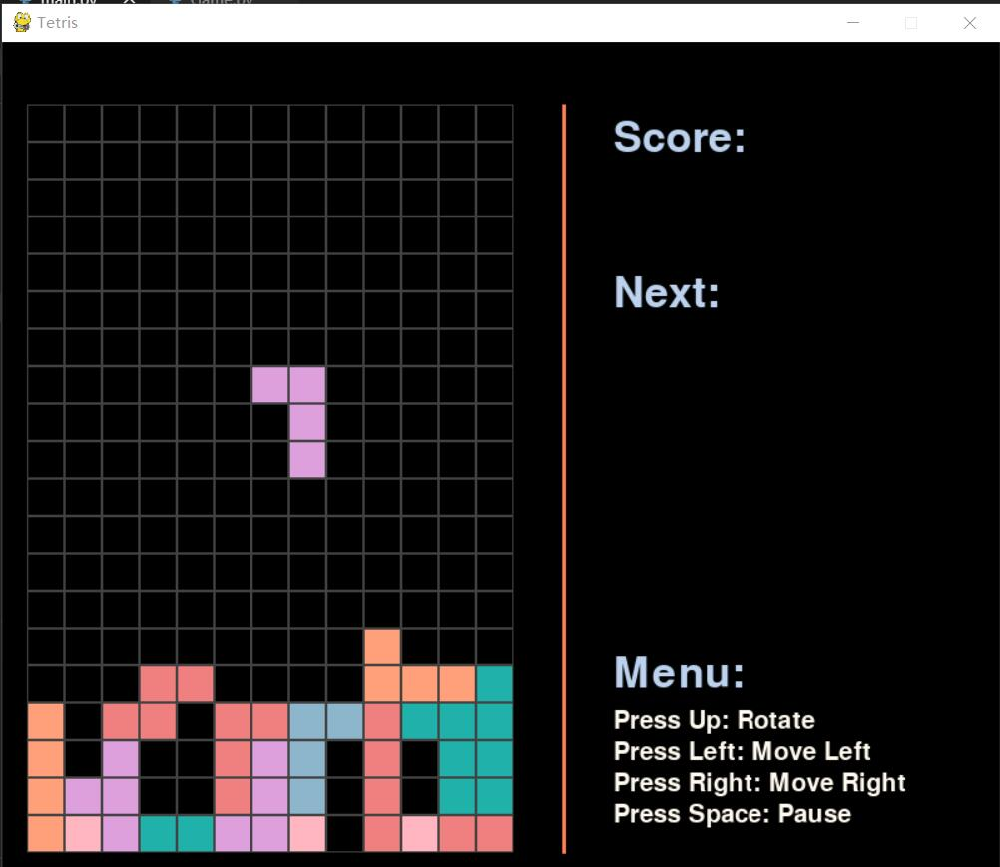

Tetris (Russian: Тетрис [ˈtɛtrʲɪs]) is a tile-matching video game created by Russian software engineer Alexey Pajitnov in 1984 for the Electronika 60 computer. It has been published by several companies, most prominently during a dispute over the appropriation of the rights in the late 1980s. After a significant period of publication by Nintendo, the rights reverted to Pajitnov in 1996, who co-founded The Tetris Company with Henk Rogers to manage licensing.
Hisoka's Nen type is Transmutation, allowing him to change the type or properties of his aura. He most often uses Elastic Love - Bungee Gum (伸縮自在の愛バンジーガム, Banjī Gamu), which gives his aura the properties of both rubber and gum. He also uses Flimsy Lies - Texture Surprise (薄っぺらな嘘ドッキリテクスチャー, Dokkiri Tekusuchā), which allows him to reproduce the texture of his choice on any flat surface; such as making a handkerchief appear to be skin. Hisoka is a popular character with fans, coming in fourth and fifth place in the series' first two popularity polls. (Wikipedia)